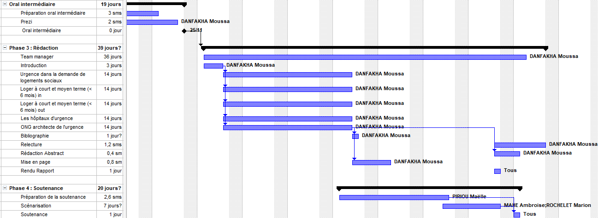
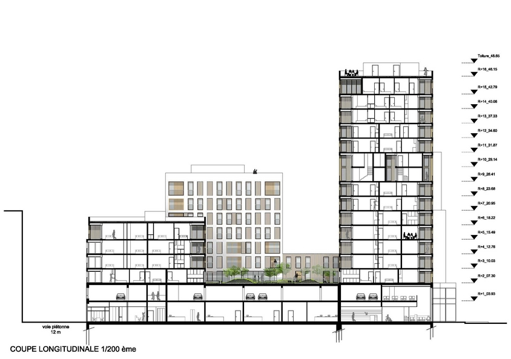

Architecte concepteur de villas contemporaines, maisons modernes béton ou poteaux poutres,
résidences design au luxe discret.
Nous concevons l’architecture comme un service de proximité destiné à tous, essentiel à la
réinvention du cadre de vie.
LA CONCEPTION de votre PROJET
1
Votre rêve
Réaliser vos projets avec Samakeur, c’est transformer vos idées en réalité.
2
L'AVANT-PROJET SOMMAIRE (ESQUISSE)
Nous établissons un avant-projet sommaire (esquisse) : il s'agit de la première représentation de votre projet de construction
3
L'AVANT-PROJET DÉTAILLÉ
L’avant-projet détaillé contient déjà l’ensemble du projet de construction : plans, caractéristiques du terrain, prescriptions urbanistiques, etc.
4
LE PROJET ET LA DEMANDE DE PERMIS D'URBANISME
Sur base de l’avant-projet retenu, votre architecte élaborera le dossier de demande de permis
d’urbanisme qui sera déposé auprès de l'administration compétente.
5
LE DOSSIER D'EXÉCUTION (DES TRAVAUX)
Le permis d’urbanisme vous a été octroyé. Votre architecte élaborera maintenant un dossier
d’exécution des travaux comprenant : les plans de réalisation, les dessins détaillés du projet, le
cahier des charges et de préférence un métré. Plus le dossier d'exécution sera précis, plus les
devis seront précis.
1
Votre rêve
Réaliser vos projets avec Samakeur, c’est transformer vos idées en réalité.
2
L'AVANT-PROJET SOMMAIRE (ESQUISSE)
Nous établissons un avant-projet sommaire (esquisse) : il s'agit de la première représentation de votre projet de construction
3
L'AVANT-PROJET DÉTAILLÉ
L’avant-projet détaillé contient déjà l’ensemble du projet de construction : plans, caractéristiques du terrain, prescriptions urbanistiques, etc.
4
LE PROJET ET LA DEMANDE DE PERMIS D'URBANISME
Sur base de l’avant-projet retenu, votre architecte élaborera le dossier de demande de permis
d’urbanisme qui sera déposé auprès de l'administration compétente.
5
LE DOSSIER D'EXÉCUTION (DES TRAVAUX)
Le permis d’urbanisme vous a été octroyé. Votre architecte élaborera maintenant un dossier
d’exécution des travaux comprenant : les plans de réalisation, les dessins détaillés du projet, le
cahier des charges et de préférence un métré. Plus le dossier d'exécution sera précis, plus les
devis seront précis.
Maîtrise d’œuvre complète tout corps d’état-MOex-Direction travaux, OPC
Maîtrise d’œuvre tout corps d’état, de la conception jusqu’à la construction d’ouvrages du Bâtiment ou d’ouvrages dédiés à l’Industrie.
Prends en charge la coordination des études de conception, la planification TCE, l’organisation de chantier et la direction des travaux aussi bien en entreprise générale qu’en corps d’états séparés.
Ingénierie multi-spécialités : compétences et expertises pour la réalisation d’études d’ensemble, de détails et d’exécution des corps d’état du Bâtiment (structures, énergies, fluides,
VRD, corps d’état architecturaux, corps d’état secondaires et économie de la construction).
Ingénierie multi-spécialités : compétences et expertises pour la réalisation d’études d’ensemble, de détails et d’exécution des corps d’état du Bâtiment (structures, énergies, fluides,
VRD, corps d’état architecturaux, corps d’état secondaires et économie de la construction).

Assistance à maître d’ouvrage (AMO, AMOA)
Définition des données d’entrée et du besoin de l’utilisateur, du projet et de ses fonctionnalités.
Assistance à la compréhension et à la validation des solutions techniques proposées par le Maître d’œuvre et les entreprises.
Assistance à la définition des stratégies de marchés et des missions des différents intervenants.
Assistance technique à la définition de la stratégie de maîtrise des CEM et de la démarche environnementale.
Définition des données d’entrée et du besoin de l’utilisateur, du projet et de ses fonctionnalités.
Assistance à la compréhension et à la validation des solutions techniques proposées par le Maître d’œuvre et les entreprises.
Assistance à la définition des stratégies de marchés et des missions des différents intervenants.
Assistance technique à la définition de la stratégie de maîtrise des CEM et de la démarche environnementale.
L’approche en entreprise générale est l’assurance pour le client d’avoir une
prestation clés en main et un interlocuteur unique maîtrisant et coordonnant l’intégralité de l’opération.
Pour mener les projets de A à Z, les équipes du pôle construction disposent de toutes les compétences et expériences pour répondre aux chantiers en tous corps d’état. Qu’ils s’agissent d’ouvrages simples ou complexes, l’expérience accumulée leur permet d’avoir une approche globale de la construction et de garantir au client : délais, coûts et qualité technique.

TRANSFORMEZ VOTRE INTÉRIEUR
Nous intervenons à la fois sur des phases précises et/ou sur l’étude complète de votre projet. Nous proposons des services d’expertise de conception, d’architecture et de décoration d’intérieur afin de créer, d’aménager, d’agencer et de rénover des espaces et des biens que nous livrons clé-en-main tous corps d’état.
Nous travaillons en partenariat avec des entreprises industrielles et artisanales pour imaginer ou rénover vos espaces de vie et/ ou votre habitat.
De l’étude à la réalisation du projet
Voici un déroulé en 5 étapes pour l’étude d’un projet quel qu’il soit.
Premier contact avec le client qui expose son souhait et prise de rendez-vous.
Première visite et entretien avec notre architecte sur place: Analyse des désirs et contraintes, relevés (prise de côtes, photos, vidéos, …), budget cible alloué au projet par le client.
Présentation d’un Avant-Projet Sommaire avec une première approche budgétaire cohérente avec le projet.
Étude détaillée: Avant-Projet Détaillé, montage du Dossier de Consultation des Entreprises, validation budgétaire définitive.
Lancement de la mise en œuvre du projet retenu.
Premier contact avec le client qui expose son souhait et prise de rendez-vous.
Première visite et entretien avec notre architecte sur place: Analyse des désirs et contraintes, relevés (prise de côtes, photos, vidéos, …), budget cible alloué au projet par le client.
Présentation d’un Avant-Projet Sommaire avec une première approche budgétaire cohérente avec le projet.
Étude détaillée: Avant-Projet Détaillé, montage du Dossier de Consultation des Entreprises, validation budgétaire définitive.